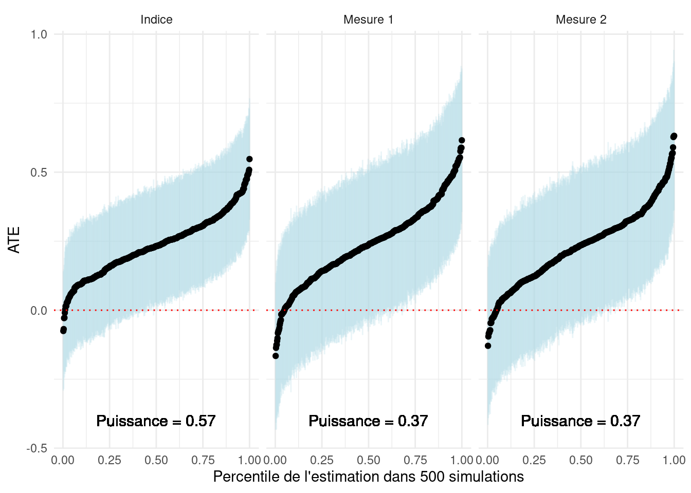

10 choses à savoir sur la mesure dans les expériences
1 La validité des inférences que nous tirons d’une expérience dépend de la validité des mesures utilisées
Nous expérimentons généralement afin d’estimer l’effet causal d’un traitement \(Z\) sur un résultat \(Y\). Pourtant, la raison pour laquelle nous nous soucions d’estimer cet effet causal est, en principe, de comprendre les caractéristiques de la relation entre deux concepts théoriques non observés mesurés par les variables observées \(Z\) et \(Y\).
À la suite d’Adcock et Collier (2001), considérons le processus de mesure représenté graphiquement dans la figure 1 en trois étapes. Premièrement, les chercheurs commencent par un concept systématisé, une construction théorique clairement définie. À partir de ce concept, le chercheur développe un indicateur matérialisant le concept sur une échelle ou un ensemble de catégories. Enfin, les unités ou les cas sont notés en fonction de l’indicateur, ce qui donne une mesure du traitement \(Z\) et un résultat \(Y\). Une mesure est valide si la variation de l’indicateur se rapproche étroitement de la variation du concept d’intérêt sous-jacent.
Une conception de recherche expérimentale devrait permettre à un chercheur d’estimer l’effet causal de \(Z\) sur \(Y\) sous des hypothèses standard. Mais si le but ultime est de faire une inférence sur l’effet causal du concept que \(Z\) mesure sur le concept que \(Y\) mesure, les inférences que nous pouvons espérer faire sur la base de nos preuves expérimentales sont valides si et seulement si les deux mesures sont valides.
2 La mesure est le lien entre l’argument substantif et/ou théorique d’un chercheur et une conception de recherche (expérimentale).
Lorsque nous considérons la conception d’une expérience, nous avons tendance à nous concentrer sur le processus par lequel le traitement \(Z\) est assigné de manière aléatoire et sur la distribution conjointe de \(Z\) et du résultat \(Y\). En d’autres termes, nous avons tendance à séparer les scores de \(Z\) et \(Y\) des concepts plus larges lorsque nous considérons les propriétés statistiques d’une conception de recherche. Dans ce cas, deux expériences complètement différentes avec la même distribution de \(Z\) et \(Y\) pourraient avoir des propriétés identiques.
Par exemple, un essai clinique sur l’efficacité de l’aspirine sur les maux de tête et une expérience qui fournit des informations sur le niveau de corruption d’un politicien sortant pour demander ensuite à la personne interrogée si elle votera pour le candidat sortant pourraient avoir des échantillons de mêmes taille et distribution, des assignations, paramètres et réalisations des résultats (données) identiques. Pourtant, caractériser comme “équivalents” ces deux projets de recherche complètement distincts qui cherchent à faire des inférences complètement distinctes peut nous sembler assez étrange ou même troublant.
Cependant, lorsque nous considérons la mesure comme une composante fondamentale de la conception de recherche, ces expériences sont clairement distinctes. Nous observons des mesures de différents concepts dans les données des deux expériences. En considérant les indicateurs et les concepts plus larges qui sous-tendent les traitements et les résultats, nous sommes obligés d’examiner les théories ou arguments respectifs des chercheurs. Ce faisant, nous pouvons soulever des questions sur la validité des mesures et la relation entre la validité des mesures et la validité des inférences finales et substantielles.
3 La mesure des traitements comprend l’opérationnalisation du traitement ainsi que la conformité de l’assignation au traitement.
Dans une expérience, les traitements sont généralement conçus ou, au minimum, décrits par le chercheur. Les consommateurs de recherche expérimentale devraient s’intéresser aux caractéristiques du traitement et à la façon dont il manipule un concept d’intérêt. La plupart des traitements en sciences sociales sont composés ou comprennent un ensemble d’attributs. Nous pouvons être intéressés par l’effet de fournir aux électeurs des informations sur la performance de leurs élus. Pourtant, fournir des informations inclut également le mode de transmission et qui a fourni les informations. Pour comprendre dans quelle mesure le traitement manipule un concept, nous devons également comprendre ce que le traitement pourrait manipuler d’autre.
Cependant, malgré tous les efforts pour opérationnaliser un traitement, dans la recherche expérimentale, le lien entre l’opérationnalisation et l’indicateur de traitement est fondamentalement distinct de la mesure des covariables ou des résultats pour deux raisons. Premièrement, en assignant un traitement, les expérimentalistes visent à contrôler les valeurs que prend une unité donnée. Deuxièmement, pour l’indicateur de traitement, le score provient de l’assignation de traitement, qui est un produit de la randomisation. Un sujet peut ou non avoir reçu le traitement, mais son score sur l’indicateur de traitement est simplement le traitement auquel il a été assigné, et non le traitement qu’il a reçu.
Lorsque les sujets reçoivent des traitements autres que ceux auxquels ils sont assignés, nous cherchons généralement à mesurer la conformité — si les traitements ont été délivrés et dans quelle mesure. Pour ce faire, nous définissons ce qui constitue la conformité de l’assignation de traitement. Pour déterminer ce qui constitue la conformité, les chercheurs doivent tenir compte de l’aspect central de la façon dont le traitement manipule le concept d’intérêt. A quel moment de l’administration du traitement se produit cette manipulation ? Une fois la conformité opérationnalisée, nous cherchons à coder l’indicateur de conformité de manière fidèle à cette définition.
Par exemple, considérons une campagne de démarchage en porte-à-porte qui diffuse des informations sur les performances d’un politicien sortant. Les ménages sont assignés à recevoir une visite d’un solliciteur qui partage l’information (traitement) ou non (contrôle). L’indicateur de traitement est simplement de savoir si un ménage a été assigné au traitement ou non. Cependant, si les résidents d’un ménage ne sont pas à la maison lors de la visite du solliciteur, ils ne reçoivent pas l’information. Notre définition de la conformité devrait déterminer ce qui constitue un “traité” sur notre mesure (endogène) : “le fait qu’un ménage ait reçu ou non le traitement”, ici l’information. Certaines définitions courantes de la conformité peuvent être (a) qu’un membre du ménage a ouvert la porte ; ou (b) qu’un membre du ménage a écouté le script d’information complet.
5 Il existe deux types d’erreurs de mesure que nous devrions considérer.
On peut formaliser assez simplement les enjeux de mesure. Supposons qu’un traitement \(Z_i\) soit supposé changer les préférences pour les normes démocratiques \(\nu_i\). En principe, la quantité que nous aimerions estimer est \(E[\nu_i|Z_i = 1] - E[\nu_i|Z_i =0]\), l’ATE sur les préférences pour les normes démocratiques. Cependant, \(\nu_i\) est une variable latente : on ne peut pas la mesurer directement. Au lieu de cela, nous demandons si les unités soutiennent divers comportements pensés correspondre à ces normes. Cet indicateur, \(Y_i\), peut être décomposé en la variable latente, \(\nu_i\) et deux formes d’erreur de mesure :
- Erreur de mesure non systématique, \(\delta_i\) : cette erreur est indépendante de l’assignation au traitement, \(\delta_i \perp Z_i\).
- Erreur de mesure systématique, \(\kappa_i\) : cette erreur n’est pas indépendante de l’assignation au traitement, \(\kappa_i \not\perp Z_i\).
\[Y_i = \underbrace{\nu_i}_{\text{Résultat latent}} + \underbrace{\delta_i}_{\substack{\text{Erreur de mesure} \\ \text{non-systématique}}} + \underbrace{\kappa_i}_{\substack{\text{Erreur de mesure} \\ \text{systématique}}}\]
6 L’erreur de mesure réduit la puissance statistique de votre expérience.
L’erreur de mesure non systématique, représentée par \(\delta_i\) ci-dessus, fait référence au bruit avec lequel nous mesurons la variable latente. En l’absence d’erreur de mesure systématique, on mesure :
\[Y_i = \underbrace{\nu_i}_{\text{Résultat latent}} + \underbrace{\delta_i}_{\substack{\text{Erreur de mesure} \\ \text{non-systématique}}}\]
Maintenant, considérons la formule de puissance analytique pour une expérience à deux bras. Nous pouvons exprimer \(\sigma\), ou l’écart type du résultat sous la forme \(\sqrt{Var(Y_i)}\). Notez que dans la formule ci-dessous, ce terme apparaît au dénominateur du premier terme. À mesure que \(\sqrt{Var(Y_i)}\) augmente, la puissance statistique diminue.
\[\beta = \Phi \left(\frac{|\mu_t− \mu_c| \sqrt{N}}{2 \color{red}{\sqrt{Var(Y_i)}}} − \Phi^{−1}\left(1 − \frac{\alpha}{2}\right)\right)\]
En quoi l’erreur de mesure non systématique \(\delta_i\) impacte-t-elle la puissance ? Nous pouvons décomposer \(\sqrt{Var(Y_i)}\) comme suit :
\[\sqrt{Var(Y_i)} = \sqrt{Var(\nu_i) + Var(\delta_i) + 2 Cov(\nu_i, \delta_i)}\]
Tant que \(Cov(\nu_i, \delta_i)\geq 0\) (nous supposons souvent que \(Cov(\nu_i, \delta_i)= 0\)), \(Var(Y_i)\) augmente quand l’erreur de mesure \(Var(\delta_i)\) augmente. Cela implique que la puissance diminue à mesure que l’erreur de mesure non systématique augmente. En d’autres termes, plus nos mesures d’une variable latente sont bruyantes, plus notre capacité à détecter l’effet du traitement sur une variable latente est faible.
Qu’en est-il du cas où \(Cov(\nu_i, \delta_i) < 0\) ? Bien que cela réduise \(Var(Y_i)\) (en maintenant \(Var(\nu_i)\) et \(Var(\delta_i)\) constants), cela atténue également la variation que nous mesurons dans \(Y_i\). En principe, cela devrait atténuer le numérateur \(|\mu_t-\mu_c|\), qui réduira également la puissance, si cela suffit par rapport à la réduction de la variance.
7 L’erreur de mesure systématique biaise les estimations de l’effet causal d’intérêt.
Si nous estimons l’effet moyen de traitement (ATE) de notre traitement \(Z_i\), sur les préférences pour les normes démocratiques, \(\nu_i\), nous essayons de calculer \(E[\nu_i|Z_i = 1] - E[\nu_i|Z_i =0]\). Cependant, en présence d’une erreur de mesure systématique, où l’erreur de mesure est liée à l’assignation du traitement lui-même (disons, le résultat est mesuré différemment dans les groupes de traitement et de contrôle), un estimateur de la différence des moyennes sur le résultat observé, \(Y_i\), renvoie une estimation biaisée de l’ATE. L’effet du traitement comprend désormais la différence de mesure ainsi que la différence entre les groupes de traitement et de contrôle :
\[E[Y_i|Z_i = 1]−E[Y_i|Z_i = 0] = E[\nu_i + \delta_i + \kappa_i |Z_i = 1] − E[\nu_i + \delta_i + \kappa_i|Z_i =0]\]
En raison de l’erreur de mesure non systématique, \(\delta_i\) est indépendant de l’assignation du traitement, \(E[\delta_i|Z_i = 1] = E[\delta_i |Z_i = 0]\). En simplifiant et en réarrangeant, on peut écrire :
\[E[Y_i|Z_i = 1]−E[Y_i|Z_i = 0] = \underbrace{E[\nu_i|Z_i = 1] − E[\nu_i|Z_i =0]}_{ATE} + \underbrace{E[\kappa_i|Z_i = 1] - E[\kappa_i|Z_i =0]}_{\text{Biais}}\]
Il existe diverses sources d’erreur de mesure non systématique dans les expériences. L’effet de demande et l’effet Hawthorne peuvent être sources d’erreur de mesure systématique. De plus, les conceptions qui mesurent les résultats de manière asymétrique dans les groupes de traitement et de contrôle peuvent être sujettes à une erreur de mesure systématique. Dans tous les cas, il existe une asymétrie entre les conditions de traitement dans (a) la manière dont les sujets réagissent à l’observation ; ou (b) la façon dont nous observons les résultats qui est distincte de tout effet du traitement sur la variable latente d’intérêt. L’estimation biaisée de l’ATE devient le net de tout effet sur les variables latentes (l’ATE) et l’erreur de mesure non systématique.
8 Tirez parti de plusieurs indicateurs pour évaluer la validité d’une mesure, mais soyez conscient des limites de ces tests.
Au-delà de la considération de la qualité de la correspondance entre un concept et une mesure, nous pouvons souvent évaluer la qualité de la mesure en la comparant à des mesures provenant d’opérationnalisations alternatives du même concept, de concepts étroitement liés ou de concepts distincts. Dans les tests convergents de la validité d’une mesure, nous évaluons la corrélation entre les mesures alternatives d’un concept. Si elles sont codées dans le même sens, nous nous attendons à ce que la corrélation soit positive et que la validité des deux mesures augmente à mesure que l’amplitude de la corrélation augmente. Une limitation des tests de validité convergents est que si deux mesures sont faiblement corrélées, en l’absence d’informations supplémentaires, nous ne savons pas si une mesure est valide (et laquelle) ou si les deux mesures sont invalides.
La collecte de plusieurs indicateurs peut également permettre aux chercheurs d’évaluer la validité prédictive d’une mesure. Dans quelle mesure la mesure d’un concept latent prédit-elle un comportement que l’on pense être façonné par le concept ? Par exemple, l’idéologie politique (la variable latente) prédit-elle le choix de vote déclaré pour les partis de gauche ? Cela fournit un moyen supplémentaire de valider une mesure. Ici, plus la capacité d’un indicateur à prédire le comportement (ou d’autres résultats) est élevée, plus la validité prédictive de l’indicateur est forte. Pourtant, nous pensons que la plupart des comportements sont le résultat d’un ensemble complexe de causes. Déterminer si une mesure est un prédicteur “assez bon” est une détermination quelque peu arbitraire.
Enfin, nous pouvons vouloir déterminer si nous mesurons le concept d’intérêt isolément plutôt qu’un ensemble de concepts. Les tests de validité discriminante examinent les indicateurs d’un concept et d’un concept lié mais distinct. En principe, nous recherchons des corrélations faibles (corrélations proches de 0) entre les deux indicateurs. Une limitation des tests de validité discriminante est que nous ne savons pas comment les concepts distincts sous-jacents varient ensemble. Il se peut que nous ayons des indicateurs valides des deux concepts, mais ils présentent une forte corrélation (positive ou négative) car les unités avec des niveaux élevés de \(A\) ont tendance à avoir des niveaux plus élevés (resp. faibles) de \(B\).
En somme, l’ajout de plus de mesures peut aider à valider un indicateur, mais ces tests de validation sont limités dans ce qu’ils nous disent lorsqu’ils échouent. Dans cette mesure, nous devons rester conscients des limites en plus de l’utilité de collecter des mesures supplémentaires pour simplement valider un indicateur.
9 L’utilisation de plusieurs indicateurs améliore souvent la puissance de votre expérience, mais peut introduire un compromis biais-efficacité.
Regrouper plusieurs indicateurs d’un concept ou d’un résultat peut également améliorer la puissance de votre expérience. Si plusieurs indicateurs mesurent le même concept mais sont mesurés avec une erreur (non systématique), nous pouvons améliorer la précision avec laquelle nous mesurons la variable latente en tirant parti de plusieurs mesures.
Il existe plusieurs façons d’agréger plusieurs résultats dans un indice. “10 choses à savoir sur les comparaisons multiples” décrit des indices construits à partir de la score-\(z\) et d’une pondération inverse de covariance pour des résultats multiples. Il existe également de nombreux autres modèles structurels pour estimer les variables latentes à partir de plusieurs mesures.
Ci-dessous, nous examinons un simple indice de score-\(z\) pour deux mesures bruitées d’une variable latente. Nous supposons que les variables latentes et les deux indicateurs “Mesure 1” et “Mesure 2” sont tirés d’une distribution normale multivariée et sont positivement corrélés avec la variable latente et entre eux. Pour les besoins de la simulation, nous supposons que nous connaissons la variable latente, bien qu’en pratique cela ne soit pas possible. Premièrement, nous pouvons montrer qu’à travers de nombreuses simulations des données, la corrélation entre l’indice de score-\(z\) des deux mesures et la variable latente est, en moyenne, plus élevée que la corrélation entre l’un ou l’autre des indicateurs et la variable latente. Lors de la représentation graphique de la corrélation entre mesures individuelles et variable latente (sur l’axe des \(x\)) par rapport à la corrélation entre indice et variable latente (sur l’axe des \(y\)), presque tous les points sont au-dessus de la ligne à 45 degrés. Cela montre que l’indice se rapproche de la variable latente avec une plus grande précision.
library(mvtnorm)
library(randomizr)
library(dplyr)
library(estimatr)
make_Z_score <- function(data, outcome){
ctrl <- filter(data, Z == 0)
return(with(data, (data[,outcome] - mean(ctrl[,outcome]))/sd(ctrl[,outcome])))
}
pull_estimates <- function(model){
est <- unlist(model)$coefficients.Z
se <- unlist(model)$std.error.Z
return(c(est, se))
}
do_sim <- function(N, rhos, taus, var = c(1, 1, 1)){
measures <- rmvnorm(n = N,
sigma = matrix(c(var[1], rhos[1], rhos[2],
rhos[1], var[2], rhos[3],
rhos[2], rhos[3], var[3]), nrow = 3))
df <- data.frame(Z = complete_ra(N = N),
latent = measures[,1],
Y0_1 = measures[,2],
Y0_2 = measures[,3]) %>%
mutate(Yobs_1 = Y0_1 + Z * taus[1],
Yobs_2 = Y0_2 + Z * taus[2])
df$Ystd_1 = make_Z_score(data = df, outcome = "Yobs_1")
df$Ystd_2 = make_Z_score(data = df, outcome = "Yobs_2")
df$index = (df$Ystd_1 + df$Ystd_2)/2
cors <- c(cor(df$index, df$latent), cor(df$Ystd_1, df$latent), cor(df$Ystd_2, df$latent))
ests <- c(pull_estimates(lm_robust(Ystd_1 ~ Z, data = df)),
pull_estimates(lm_robust(Ystd_2 ~ Z, data = df)),
pull_estimates(lm_robust(index ~ Z, data = df)))
output <- c(cors, ests)
names(output) <- c("cor_index", "cor_Y1", "cor_Y2", "est_Y1", "se_Y1",
"est_Y2", "se_Y2", "est_index", "se_index")
return(output)
}
sims <- replicate(n = 500, expr = do_sim(N = 200,
rhos = c(.6, .6, .6),
taus = c(.4, .4),
var = c(1, 3, 3)))
data.frame(measures = c(sims["cor_Y1",], sims["cor_Y2",]),
index = rep(sims["cor_index",], 2),
variable = rep(c("Mesure 1", "Mesure 2"), each = 500)) %>%
ggplot(aes(x = measures, y = index)) + geom_point() +
facet_wrap(~variable) +
geom_abline(a = 0, b = 1, col = "red", lwd = 1.25) +
scale_x_continuous("Corrélation entre mesure et variable latente", limits = c(0.1, .6)) +
scale_y_continuous("Corrélation entre indice et variable latente", limits = c(0.1, .6)) +
theme_minimal()Maintenant, considérons les implications pour la puissance statistique. Dans les simulations, nous estimons l’ATE d’un traitement sur la Mesure 1, la Mesure 2 et l’indice. Le graphique suivant visualise les estimations. Les lignes bleues montrent des intervalles de confiance à 95 %. Les intervalles de confiance plus petits autour l’indice visualisent les gains de précision résultant de l’utilisation des deux mesures. Nous voyons que cela se manifeste par une puissance statistique plus élevée pour l’expérience.
data.frame(est = c(sims["est_index",], sims["est_Y1",], sims["est_Y2",]),
se = c(sims["se_index",], sims["se_Y1",], sims["se_Y2",]),
outcome = rep(c("Indice", "Mesure 1", "Mesure 2"), each = 500)) %>%
mutate(T = est/se,
sig = 1 * (abs(T) > 1.96)) %>%
group_by(outcome) %>%
mutate(power = sum(sig)/n(),
lab = paste0("Puissance = ", round(power, 2))) %>%
arrange(est) %>%
mutate(order = 1:500/500) %>%
ggplot(aes(x = order, y = est)) +
geom_errorbar(aes(ymin = est - 1.96 * se, ymax = est + 1.96 * se), width = 0,
col = "light blue", alpha = .25) +
geom_point() +
facet_wrap(~outcome) +
geom_text(x = 0.5, y = -.4, aes(label = lab), cex = 4) +
geom_hline(yintercept = 0, col = "red", lty = 3) +
theme_minimal() + xlab("Percentile de l'estimation dans 500 simulations") +
ylab("ATE")
Nous avons examiné un indice composé de seulement deux indicateurs. En principe, il y a d’autres gains d’efficacité à faire en intégrant plus d’indicateurs dans votre indice. Pourtant, à mesure que nous augmentons le nombre d’indicateurs, nous devrions considérer dans quelle mesure la fusion des indicateurs adhère au concept original. En ajoutant des mesures pour tirer parti des gains d’efficacité, nous pouvons introduire un biais dans la mesure du concept latent. Les chercheurs doivent louvoyer avec ce compromis. Le pré-enregistrement des composants d’un indice fournit une manière raisonnée de naviguer pour un problème qui oblige un examen approfondi du concept en l’absence de données. Cela évite également les questions ex post sur le choix des indicateurs pour un indice.
10 Alors que les concepts peuvent être globaux, de nombreux indicateurs sont spécifiques au contexte.
De nombreuses études en sciences sociales se concentrent sur des concepts qui sont généralement supposés être latents, notamment les préférences, les connaissances ou les attitudes. Dans la mesure où nous travaillons sur des concepts communs, il existe une tendance à s’inspirer des opérationnalisations existantes à partir d’études sur des concepts connexes dans des contextes différents. Dans des études menées dans de multiples contextes, comme dans l’initiative Metaketa de EGAP, les chercheurs visent à étudier la même relation causale dans plusieurs contextes nationaux. Mais le désir d’étudier des concepts communs n’implique pas nécessairement que les mêmes indicateurs doivent être utilisés dans tous les contextes.
Par exemple, considérons un ensemble d’études qui cherchent à mesurer la variation du concept de connaissance ou de sophistication politique. Les connaissances politiques peuvent être évaluées par des questions qui demandent aux sujets de se rappeler d’un fait politique. Une question peut demander aux sujets de se rappeler le nom de l’exécutif actuel (président, premier ministre, etc.), en notant les réponses comme “correctes” ou “incorrectes”. Dans le pays \(A\), 50% des personnes interrogées répondent correctement à la question. Dans le pays \(B\), 100 % des personnes interrogées répondent correctement à la question. Dans le pays \(B\), nous ne pouvons identifier aucune variation dans l’indicateur car tout le monde pouvait répondre à la question. Cela ne signifie pas qu’il n’y a pas de variation dans les connaissances politiques dans le pays \(B\), juste que cet indicateur est une mauvaise mesure de la variation qui existe. Dans le pays \(A\), cependant, cette question peut être un indicateur tout à fait approprié pour la connaissance politique. Si la connaissance politique était le résultat d’une expérience, l’absence de variation dans le résultat dans le pays \(B\) ne nous permet pas d’identifier une différence dans la connaissance politique entre les groupes de traitement et de contrôle.
Pour cette raison, s’il peut être utile de développer des indicateurs basés sur des travaux existants ou des instruments provenant d’autres contextes, ce n’est pas nécessairement la meilleure façon de développer des mesures dans un nouveau contexte. Les pré-tests peuvent fournir des indications pour savoir si les indicateurs sont appropriés dans un contexte donné. En somme, la correspondance entre les concepts et les indicateurs est spécifique au site dans de nombreux cas. Les chercheurs devraient tenir compte de ces limites lorsqu’ils opérationnalisent des concepts communs dans des contextes distincts.
11 Bibliographie
Adcock, Robert et David Collier. “Measurement Validity: A Shared Standard for Qualitative and Quantitative Research.” American Political Science Review. 95 (3): 529-546.